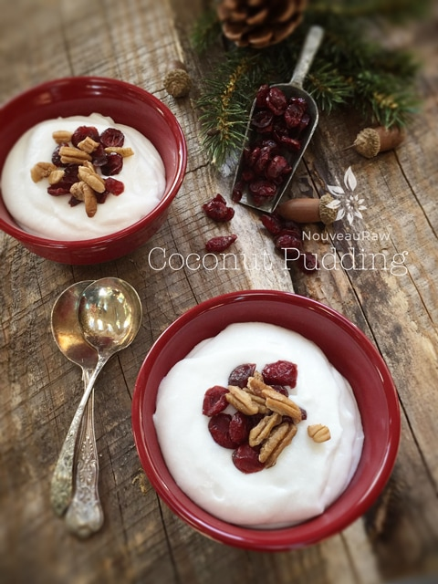

Coconut Pudding
Coconut Pudding

~ raw, vegan, gluten-free, nut-free ~
For the love of coconuts! Slap a bib on me, hand me a spoon, and stand back, cause I’m diving in! I have been enjoying Young Thai Coconuts for at least seven years now, and every time I blend up the meat in a blender, I stand in awe of just how beautiful it is. So pure, so white, so delicious!
You don’t have to add sweeteners, thickeners… anything! The trick is to use the least amount of liquid when blending it. You can use either water or coconut water if you have it. I find that it works best in a Vitamix with a tamper. That way you can keep the meat down in the blades, thus creating a smooth and creamy pudding. If you don’t have a tamper, you will have to stop the machine periodically to scrape the sides down, getting the meat back into the blades.
In case you are wondering… a food processor isn’t the best choice of a kitchen tool to use for this. I guess, if that is all that you have, it will work, but it just won’t get that wonderfully smooth mouthfeel.
You can, of course, convert this pudding into a raw coconut yogurt. Click (here) to get the recipe. But trust me, it is amazing all on its own. You could even thin it out and use it as a soup base. But for me… I am going to enjoy it as is, adulterated. If you chill for a few hours in the fridge, it will even get a bit more firm.
If you are dying to… then dress it up as you see fit. Sprinkle granola, nuts, seeds, dried fruits, etc. on top and enjoy. But first, try this fantastic treat all by itself. :)
Nutritional Data:
1/4 cup serving: Calories 108 / Fat 4.5 g / Carb 16 g / Fiber 8 g / Protein 1.8 g
Ingredients:
yields 2 1/4 cups
Preparation:
- Place the coconut meat in a high-powered blender along with 1/2 cup of liquid. Blend on high until creamy smooth. If you have a Vitamix, use the tamper. If you don’t have a tamper, you will need to stop the blender periodically to scrape the sides down.
- Eat right away, or chill for a few hours to thicken up even more.
- Store leftovers in the fridge for 2-3 days.
© AmieSue.com